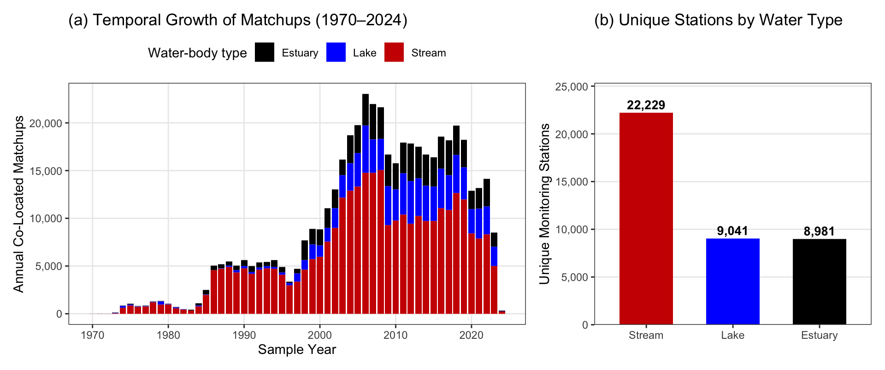

Section 1 Harmonized Continental Data Sources (00_download.R)
Public water quality databases like the Water Quality Portal (WQP) aggregate millions of field measurements collected by hundreds of federal, state, tribal, and local agencies, but raw WQP downloads require extensive harmonization of parameter names, reporting units, analytical methods, and detection limits before they can be used for continental synthesis (Ross et al. 2019).
To make our workflow fully reproducible from harmonized public sources, R/00_download.R retrieves three sets of open data at the start of the pipeline:
- Harmonized In-Situ Water Quality (
{AquaMatchr}): Four harmonized WQP parameter datasets published in the Environmental Data Initiative (EDI) repository:- Secchi disk depth (
sdd):edi.1856.1(De La Torre et al. 2025; 2.74M records, 1970–2024) - Chlorophyll a (
chla):edi.1756.2(Brousil et al. 2024a; 3.39M records, 1970–2024) - Dissolved organic carbon (
doc):edi.1809.1(Brousil et al. 2024b; 1.84M records, 1970–2024) - Total suspended solids & suspended sediment concentration (
tss):edi.2048.2(Brousil et al. 2025; 4.61M records, 1970–2025)
- Secchi disk depth (
- Hierarchical Ecoregion Boundaries: U.S. EPA / CEC North American Ecoregion shapefiles for Levels I–IV (Omernik & Griffith 2014).
- River Network Flowlines: RiverSR modified NHDPlusV2 flowlines (Gardner et al. 2021; Zenodo record
4304567) used to compute longitudinal river distances along the Delaware River (Figure 3).
raw_status() %>%
mutate(size = scales::label_bytes()(bytes)) %>%
select(id, file = dest, size, present, size_ok, used_for) %>%
kable(col.names = c('Dataset ID', 'Local Path', 'File Size', 'Present?', 'Size Verified?', 'Pipeline Role')) %>%
kable_styling(bootstrap_options = c('condensed', 'striped'), font_size = 12)| Dataset ID | Local Path | File Size | Present? | Size Verified? | Pipeline Role |
|---|---|---|---|---|---|
| aquamatch_sdd | aquamatch/sdd_harmonized_final.csv | 635 MB | TRUE | TRUE | AquaMatch harmonized Secchi disk depth (sdd, edi.1856.1; 2.74M records, 1970-2024) via AquaMatchr::download_parameters() |
| aquamatch_chla | aquamatch/chla_harmonized_final.csv | 815 MB | TRUE | FALSE | AquaMatch harmonized Chlorophyll a (chla, edi.1756.2; 3.39M records, 1970-2024) via AquaMatchr::download_parameters() |
| aquamatch_doc | aquamatch/doc_harmonized_final.csv | 420 MB | TRUE | TRUE | AquaMatch harmonized Dissolved Organic Carbon (doc, edi.1809.1; 1.84M records, 1970-2024) via AquaMatchr::download_parameters() |
| aquamatch_tss | aquamatch/tss_harmonized_final.csv | 1 GB | TRUE | TRUE | AquaMatch harmonized Total Suspended Solids & SSC (tss, edi.2048.2; 4.61M records, 1970-2025) via AquaMatchr::download_parameters() |
| eco_l2 | ecoregions/na_cec_eco_l2.zip | 31 MB | TRUE | TRUE | CEC North America Level I and II ecoregions (Omernik & Griffith 2014) |
| eco_l3 | ecoregions/us_eco_l3.zip | 28 MB | TRUE | TRUE | US Level III ecoregions (NA_L3CODE used as the Level 3 code) |
| eco_l4 | ecoregions/us_eco_l4.zip | 66 MB | TRUE | TRUE | US Level IV ecoregions (no state boundaries) |
| riversr_shp | riverSR/nhdplusv2_modified_v1.0.shp | 17 MB | TRUE | TRUE | River centerlines with path length (Delaware longitudinal distances, Fig 3) |
| riversr_shx | riverSR/nhdplusv2_modified_v1.0.shx | 272 kB | TRUE | TRUE | |
| riversr_dbf | riverSR/nhdplusv2_modified_v1.0.dbf | 132 MB | TRUE | TRUE | |
| riversr_prj | riverSR/nhdplusv2_modified_v1.0.prj | 143 B | TRUE | TRUE |
Calling fetch_all() downloads any missing files and verifies their byte sizes:
Key Harmonization Rules (R/00_download.R, R/prep.R)
- Combining TSS and SSC (
edi.2048.2). Major USGS river networks (NASQAN, NAWQA) and western U.S. basins report Suspended Sediment Concentration (ssc) rather than sub-sampled Total Suspended Solids (tss). Becauseedi.2048.2harmonizes both in \(\text{mg L}^{-1}\),build_aquamatch_joined()usestsswhen present and supplements missingtsswith harmonizedsscso both eastern and western river networks are represented. - Secchi method & MDL flags. In
edi.1856.1, raw entries \(\le 0.01\text{ m}\) (including0.0 mmissing placeholders) carrymdl_flag >= 2, and non-Secchi turbidity-tube estimates carryapprox_flag > 0. We set Secchi depth toNAwheneversdd_mdl >= 2orsdd_approx > 0, keeping those artificial values out of Secchi calibration while retaining their paired chemistry (Chl a,DOC,TSS) for ternary projection.
1.1 Temporal & Water-Body Coverage Across the Conterminous U.S.
Consolidating all ResolvedMonitoringLocationTypeName entries containing "Lake" (lakes, reservoirs, impoundments) into Lake alongside Stream and Estuary yields 40,251 unique ambient monitoring stations:

Figure 1.1: Left: Annual count of co-located 3-constituent matchups (1970–2024) by water-body type. Right: Unique monitoring stations by water-body type across the conterminous United States.